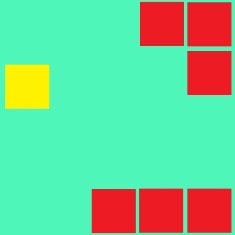
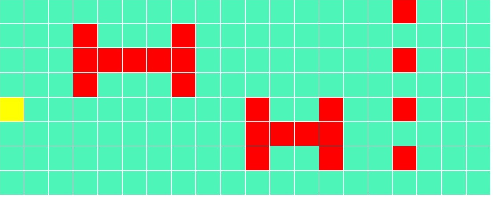
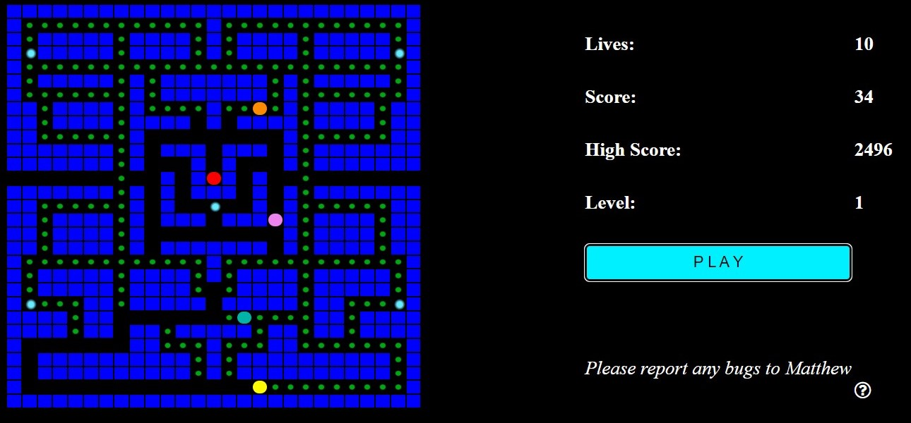
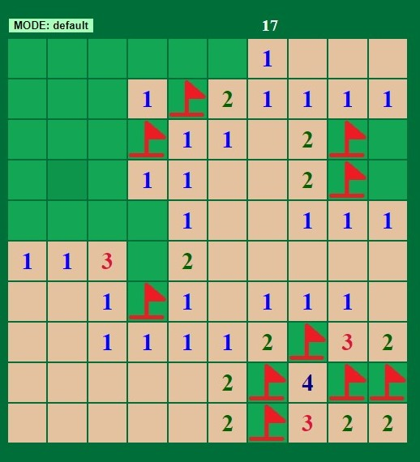
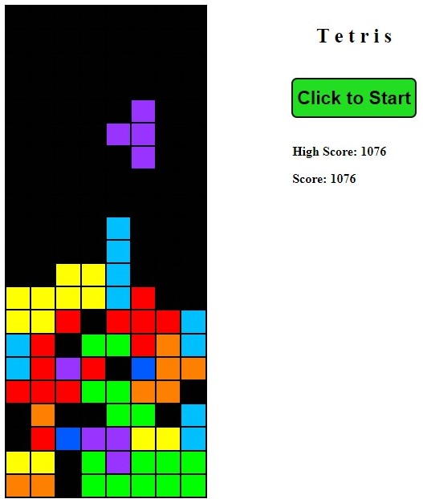
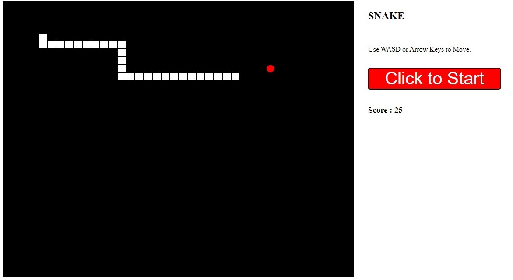

Home Page
Welcome to Matthew's Games
This website is available online at
https://sites.google.com/view/matthews-games-170/home
I intent to keep this site up to date. However, if I ever find a better place to host my site, A link to it would be posted there
These are games that I have made in JavaScript
There are 7 games;
- Not-so-flappy Dot - A game where you dodge incoming obstacles.
- Wack-a-character - Wack-a-mole, but you can change what you are whacking
- Dot Man - A remake of Pac Man
- Mine Sweeper - Is very similar to the game it is meant to be
- Tetris - Based of the game of the same name.
- Snake - A terrible version of snake, based on the python version
- Wordle - A variation of the Well known game
I would not recommend playing wack-a. I started it, but never got round to finishing it.
I would like to point out that, especially for Dot Man and Not-so-flappy Dot, the 'lag' / stop-go running of the games is not your computer. The way that I designed the games to work has the side effect of this occurring.
I hope to make more games or HTML/JavaScript related Things, and add them here in the future.
However, as the second of prelims approaches, and my time left at school running out, it
is unlikely any new games or features would be added here.
This is website version 4.1.4.1
Do note, if you do not have JavaScript enabled for your browser, please do enable it.
These games need it to run.
And if you are using Microsoft Edge - you cannot play Dot Man
About Us
You lost the Game
This Website was made by Matthew Cole during late 2021 and early 2022
It was designed to allow the game 'not-so-flappy dot' to be connected to its random section generator, which would requrire pHp, but I have not done this.
However, I have used the website as a platform for several other games as well.
For the 'Not-so-flappy Dot' game, I would like to Give Special
Thanks to Andrew Twigg, who not only Cut to code of the game
down by at least 3500 lines, but he added in the High scores
and, most importantly, allows the game to adjust its width
depending on the screen size.
Ultimately, this little bit of code was able to reduce
the size of each of my game down quite considerably
However, I have since found another way that I prefer to use.
However, today, including comments and empty lines, it is about 22300 lines of code!.
I should probable also give credit to W3 Schools, a website that teaches about HTML, CSS, JavaScript, pHp and many other languages. This was where I went to find several bits of code and learned most of the JavaScript and pHp I know today. Also, most of the obscure CSS properties I found here.
Acknowledgements
I would like to give a big thank you to Mr MacMillan for helping me where he could with this website and teaching me through S5 and 6 computing. I could not have the skills I have today without ___
History
The game, 'not-so-flappy' dot, was first made during June 2021. I, Matthew, created the game on a 5 by 5 pixel Microbit, and had it working well.
I tried to expand the game, but was stopped by the storage limit on a Microbit
This led me to think about putting it onto a webpage, using JavaScript to connected it to HTML. However, over the summer holidays, this was never made and after the summer, I did some work with pHp
During October and November 2021, I began to make the website version of the game. After re-writing the entire code, as the JavaScript and the Microbit code were not compatible, and a lot of frustrated staring at squares to change, I got it to work.
November 2021
The first step was getting the 20 by 8 grid of 'Dots' to exist and turn on and off. This involved the creation of a plot and unplot function which would determine the coordinate of the dot selected then toggle that one to a specified colour. These 3 functions (on, off and player) each consisted of about 500 lines of code.
Once these core functions were made, I had to start making them appear in a pattern, which was not so difficult as I had already done it on the Microbit. And very quickly I had a running pattern, which at the time would repeat.
The next step was the Player interactivity. At first this was just a few buttons on the page that you had to click with the mouse but this soon became too slow for me. I then experimented with keyboard events and was able to have the keyboard do the same job as the buttons. The Buttons still remain there, in case it is ever use on a touch screen device, making it the only one of my games that is compatible.
As this was now working, it attracted the attention of several people.
One of these people was Andrew Twigg, who has had some brilliant Ideas on how to shorten my code and make it do things I want it to do, but I had never been able to do
He managed to reduce the size of my plot functions to about 5 lines of code each. He also found a way to store the high scores. I however, expanded this to create the High scores table and the names that are here today
December 2021
After making 'not-so-flappy Dot', I wanted to make more of these games, so I began working on two, with two more ideas in the making.
The first of these, Wack-a-character, was inspired by my brothers 'Wack-a-Boris' game that he had made during his S3 computing. I wanted to make something similar, but more varied, so I made wack-a-character.
This, however, was left behind after getting the basic game running, which it still is at the time of writing. As Prelims had finished and now I wanted to make some sort of Pac-Man
At first, no-one knew exactly what I was working on, and if asked, I would say 'Secret Project', but after the player started to work, people managed to guess it and I told them what it was.
At first, there was some errors in the plotting functions, but that was overcome quickly. The main problems were the ghosts. I had no real idea on how to get them to move about, never mind going towards the player.
My first step was to get 4 ghosts running around randomly, not aiming for the player at any point. This helped me develop the functions to go around corners or junctions, which although it chooses a random direction, the function for the direction could be edited to make the ghost choose the direction which is heads towards the player
The first ghost to run without getting 'stuck' or produce errors first ran in late morning of the 24th of December 2021, With the other three given the same random movement later that day
Over the remaining days of 2021, I managed to get the Red ghost to have a code that allowed it to follow the player. This one would favour going the direction that would decrease the distance between the two of them. The pink one was given a third sort of code, which was the same as the Red's code, but opposite favouring mechanisms. (Where the red would favour left, the pink would favour up).
If you wish to know how I got the ghosts to work, visit the Code Description page or open up the file
During this time, I also got the 'coins' to display smaller than the player.
This was done by giving it a radial colour - basically the colour changed. The inner 2 colours are the same,
and the one I want to display. The final colour is black, the background colour.
January 2022
At the beginning of January, there were a few bugs to sort out, such as the ghosts would crash the game if they went too far right. The ghosts were also unable to go through the teleporter.
Both of these were fixed as they were errors relating to the code that teleports the player.
By the 10th of this month, I started to work on the Die and power up parts of the game.
on this date,
I made functions to make the ghosts run away from the player. By accident, this was too good. it was nearly impossible
for the player to ever catch the ghosts.
All this function was the same one of making the ghosts come towards you,
but every direction was reversed. if it wanted to go left, it went right.
Before this time, Dot-Man had a playing area of the entire screen. However, when trying to add in a display area for the Score and lives, I could not add them in without losing some game play area. Instead, I create a smaller map. This map is about halve the original size, but conveniently appears to fit a very similar map to the original game. This was also the only map that I felt happy as a map, so it was used.
On the 13th, 'Dot-Man' became a proper game, with all unnecessary keyboard controls
requiring admin privileges. The game was given a High score function and a button to press play
the next day.
This was also the same day that I stared to create a responsive navigation bar, which would
adjust when the width of the screen was changed
On the 17th I managed to get the responsive navigational bar to work. This works by measuring the width of the window each time the viewport is resized. If the width is less than about 1100 pixels, it switches to the smaller navigational bar. You can then click the 'More' button to have a sort of drop-down list that allows you to choose which page to access. However, on this day, the drop-down menu is not quite right. If the page is the play or code description, where there is a side menu, the side menu covers the main menu
Oh. wait...
Its me that should be doing maths revision!')">
After this, I deemed Dot man to be complete and started working on my next project. By popular vote, it was minesweeper.
The main issue of this would be to have a function that cleared the tiles nearby to where you clicked.
This was based on the actual Mine sweeper game and I think that is was a very good
remake of it. This was the first project that has a actual use of a function that calls itself. This was to remove the
tiles around it.
This project was working within 11 days!
I stared by using another of my simple projects that creates the HTML code for a table. After that I created the plotting functions.
The mines are hidden through a few functions that create a list of positions where mines are, then the positions are set in
the records that contains the actual things beneath the tiles. A third function runs to count up the numbers.
The Cascading revel function uncovers the specified position then, if and only if, it does not have a number or mine under it,
it runs itself again on all the surrounding tiles. I had some issue with this at first as it did not clear the surrounding tiles and,
after I solved that, it kept reoccurring until it ran out of memory
At the very end of January, I started to fix some of the Errors/Issues with the Minesweeper game.
These included the end of the game, which did not always work correctly, in that it would finish earlier than expected.
The flags could also be placed on empty tiles, and this was very quickly fixed.
The last remaining issue was the fact that when you first click, the mines could be there. General feedback suggests that people do not
like this
so I began working to fix it.
February 2022
Minesweeper had a few bugs at the beginning of the month, mainly at the end of the game. These hopefully have now been fixed Also, from the feedback, the mines no longer seem to appear at or near where you first click. I also started to try and make new Levels, but the drop down box is not working well, so these are not in the game.
As a reward for reading this, I will include a way of cheating most of my games. When I was testing the game, I used the Developer tools offered by Chrome. This includes a variety of tools, such as a debugger for JavaScript. There was also the 'console' tool that errors would pop up into or you could get the code to print something to it, similar to the alert function but would not stop the execution of the code. This allowed me to see what the code was doing. However, it is not a one-way process. You could type in a relevant line of code, such as score = score + 1, and the code would actually execute this line of code nd your score would increase by 1. So if you know a few bits of JavaScript, you could theoretically cheat. How do you think I got the high score on Dot Man to be infinity?
To find this, right click on the page, and click inspect. This brings up a section in the right-hand side. The bottom, empty, box is the console, type stuff here to cheat. If using Minesweeper, right-click does not bring up this menu. Instead, click the 3 dots in the top-right. Go down to more tools, then developer tools. This brings up the same menu.
Before you question why I would include how to do such a thing, I did it so that users know that I am aware of it. I have tried to resolve the issue, but seeing as you can simple just input any command, then I cannot find a way of disabling it
This month, I also started making Tetris. I started by create a table and getting a group of 'dots' to move as one. This was done pretty quickly, but with some difficulty. Rotating the 'object' was the difficult part. I considered using a matrix for this, but I could not find a way to get the relevant information from the matrix and plot it. There may also be issues when getting close to stationary objects, as these parts may also be turned.
My Solution to this was to have a different Object for each rotation of each object, although it is long, at least there are only 4 versions and 7 objects. Validation is easier for this method, and the object should not be able to go out of bounds.
One thing this this option, is that objects cannot rotate near an edge. In normal Tetris, the object would move about so that is can rotate, but I couldn't be bothered to make it do that, so have fun with the game being harder than normal.
The next job was to get the objects to become part of the background. At first it was just full of errors, but eventually I got the code to apparently change the colours of the object. Which of course it is not meant to do.
On the weekend of the 5th, I started to rearrange and re-name the website and its pages. This was because there was a chance that it would be left for others to access in years to come, so I wanted to make it as organised as possible. All the 'useless' files, the notes and odd HTML documents that had been saved with this site, were removed and every page that was to be kept was given sensible names (for quite some time, the Dot Man files were named game2styles.css etc) and organised into separate folders together. This was hoped to enable any future person looking through the files would be able to find what they were looking for.
I also create the 'Expanding' page to provide notes on how to create more games and add them here.
On the same weekend, I also finally found out how to insert an image as an icon in the tab. Turns out, the image has to be a 'favicon.ico' file and its link must be placed just after the HTML tag at the beginning of the Document.
Tetris became rather troublesome later that month. I managed to get the object to rotate correctly, interact with blocks that are at the bottom of the game and be able to become part of the base. However, only two of these would happen at any one time, and, once part of the base, the object would rarely come back and when it did, it would not be complete.
The bugs were fixed by re-ordering the way some of the functions are called, and creating new ones that do almost the same jobs as others. I now had a program that ran very well, but was incomplete. I then made a function to delete the bottom row if it was full, and after a timer was added, this detected when any row was full at any time.
At this point, the end was in reach. The February Holidays has just started when I started to play about with the styling of the Tetris page. I also hopefully got the ending of Minesweeper to be detected correctly and fixed a bug with Dot Man`s play button. (You could press play multiply times to make it faster). The High scores for Dot Man, Tetris and Minesweeper was also added to the home page.
The final step it would seem for Tetris was to make the game end once blocks were being placed at the top of the screen. This actually took quite a while to get it working correctly, and enable the user to restart the game by simply pressing Start again. Most of the time and error would occur as the game was trying to plot the object where it was not allowed to go. This error often caused the game to 'crash', and seemingly end.
This was fixed though, by introducing a Boolean that stated whether the game was in play or not. Most key functions have been only able to go if the variable is true. The user also cannot press down if the game is not in play, as this could cause issues if the game has finished, but the user can still press down.
At the time of writing, Tetris does not show what blocks are coming up. This is because I never found it to be useful, and I cannot be bothered to create a different table to do so
After the holidays, I found a way to get JavaScript to detect which browser you are using. As Edge is the worst one, I have made my website deliberately able to disrupt Edge users. Sorry if you can only use edge, but links to where Chrome can be installed have been included.
Also, whilst testing Tetris, I found a bug that when you tried to turn when you would collide with another block, you died. I believe this issue has now been fixed, but it originates in an area that had several bugs during the creation of the game, so there may still be problems with it.
At the end of this month, I started to move on to other stuff, such as revision, so I was ready to stop adding stuff here. Although, I did start editing the actual website for later use. The expanding page was re-made and turned into the Code description page, and more content was added there. The section below about my future Ideas was also added in case any person comes along in the future and wants to add to it, or do stuff I never did.
I found a way of being able to 'log in' using JavaScript. This would be used to allow a person with the relevant log in details to alter the high scores via a user friendly interface. However, as mentioned below, this would ideally be part of a server`s job for a few reasons such as the fact you can easily find unencrypted password and usernames in the code. In an ideal world, I would have created encrypt and decrypt functions and store a encrypted version of the password, which is passed through the decrypt function every time it is needed. There would also be code to attempt to stop the console from using the decrypt function).
March 2022
During March 2022, I was still fixing bugs for a while, but revision for my final exams and second prelims started to take over. Some stuff was added, such as the adverts, but nothing major was done.
On the 14th, this site and its games become my STEM project. Before hand, it had just been a project that I started in Applied Computing that had kind of got out of hand and had lots done to it in my free time.
On the 22nd, This website had its first outing. It was shown to some of the older pupils of Callander primary. The general feedback was positive. A few of them asked to have it on their Chromebooks, but I didn’t really want to cause them to be missing/ignoring classes by playing these games. Minesweeper was a bit too complicated for them.
Towards the end of this month, I also thought of a way to get this website online, but without a pHp Sever behind it. Google Sites offers a free personal-use only website maker. But it is made for people to not have to use HTML code to do so. I could however, copy some html code into a section. My thinking is to put my entire website into one document and then copy the code into this section on google sites, and make it the full width of the page.
For each Game, I need to do the following.
- Ensure not Function names clash
- Ensure no Class or Ids clash
- Ensure no varible names Collide
- remeber to update the new names of things across all three documents
My method for this is to add the game name, then '_' in front of everything I need to change. If any of them do collide, then there could be issues, such as incorrect score, the wrong function is called, and something completely different is done.
I have not listed everything that I have added in this website in this description of it.
Explore the website to find them all...
April 2022
Really, there should not be anything here, because I should have been revising. However, the basics of snake was made on the afternoon of the 4th as I was procrastinating a lot, and ended up with most of the game after about 3 or 4 hours of work.
The game itself is very simple. It has the basic plotting functions, the same as every other game. The movement is very similar to Dotman, where the arrow keys change a direction variable and on each tick, it will move in that direction.
The only real tricky bit was getting the tail to exist and 'grow'. I used an array to solve this. When the player moves to a new spot, it adds a new item to an array (at the bottom of it), plots the new position then unplot the first item (index 0) of the array. Then all the containers are moved up 1, replacing index 0 with a new value.
To extend the tail of the 'snake', I duplicate the second item in the array. This does cause the snake to not instantly grow, but I like to think of it as the fruit going through the snake. Really, it was because I though this container may get deleted / replaced when it should not be.
There was also issues relating to resetting the game. Trying to set every table cell to blank proved much more difficult that it should be.
The fruit also sometimes appeared on the tail of the snake, but this was fixed quickly.
It really surprised me how quickly it took to make snake, or at least the simple version. In total, about 6 hours of work went into the making of it before it was added to the website. A few bug fixes have since been added to it
Whilst looking for a contact at St Andrews university to see why I was rejected from there, I came across a way to make the standard email software be opened by clicking on a button or link in HTML. It is not what I wanted to do, but it is close enough. This was then added as the feedback page (version 2). As I would technically be storing your data, such as Email address, a made up a simple privacy policy using my knowledge form Cyber security.
Also this month, I started working on two more games, which I intend to release for the STEM festival. These are my version of Wordle and Space Shooter. At the time of writing, both are nowhere near completion, and I don`t know if they will even be done. Chances are they will be under extreme testing during the festival.
Space shooter is mentioned below in my Ideas page, but basically at this stage it is planned to be a fighter jet that you can control shooting asteroids or perhaps aliens etc. What’s different about this games is that I have decided to play about with the position property for positioning, rather than use table cells. this is mainly due to the fact that I could not get a asteroid or fighter jet to display and move correctly with tabel cells.
Also, the ammunition would also be interesting to code. Asteroids would be simple enough to code, but having a way to detect when 'sprites' are being hit by each other would most certainly be hard
Space shooter seems like something that would take an hour in scratch. It seems like I am constantly trying to make scratch blocks in JavaScript, such as the 'move forward' block or 'if touching sprite' block / statement. I am attempting to make use of several div tags as my version of sprites. each div is then given its own styling to make it look like what its meant to be.
Wordle, or at least my version of it, will be easier to code, probably. my plan for that is to have a 5 x 5 table,
where you can enter any letter (a to z) into it. A submit button will then turn each input box to either red (letter
not in word), Yellow (letter in word, wrong position) or green (correct place).
Despite it being a craze as such, I have not played wordle nor have I seen the game. I have been in the same room
as several people plying it, but I have no idea how the interface works. Hence, it would be my own version on how I
think thinks should be.
I`m now writing this after I have finished the first version of Wordle, and my only though it is: Wow.
That was simple.
I don`t know how much code is in the actual wordle, but my version has very little. Although the file is
2624 lines long, by the time you remove all the stored 5-letter words and comments, it is only 120 lines of
actual worthwhile code. Even then there are still important comments and white space along with several '}' only lines.
Yet it appears to work.
I have sourced the words from the following site, Accessed on 12/04/2022 at around 16:30.
https://eslforums.com/5-letter-words/
There are ones that I have removed, mainly because I have never heard of them. If you think there are words that should be there,
but aren`t in my game then please send me feedback and state the word you think should be there.
Along with a statement saying that you think this word should be there. Otherwise, I won`t know why you are emailing me a single word!
Ideas
I do not know if I will be able to continue editing and expanding this website, as it is a collection of files on the school’s computers at the time of writing, and I approach the end of my time in school. The following section is full of Ideas that I would like to do for this website, but may never get to do.
Back at the very beginning, I had a choice. Use a table or use the position property for displaying the games. I went with the table idea because it seemed easier to control. Thinking back, the position property would have been more effective, but harder to see where you are, in terms of coordinates. If anyone has time, maybe they could try to remake my games - or other ones - using this method to see if it’s are actually better.
The biggest Idea that I have is to get it working with a sever, even if it is just pHp through Xammp. The High scores would then be stored on the sever and accessed by anyone, not just having high scores on each machine anymore.
I could create a user-friendly page or two for the admin side of the database(s). This could allow me or anyone with the correct password, to alter major components of the website, such as the high scores stored with it or each random section. Who's to say that I could not review each section before it is actually released into the Not-So-Flappy Dot? I could even have a list of games with the site, that I could change which ones are available to play. The server could also record how many times each game is played.
As part of it being connected to a server, I really want it to be able to send emails, but this requires it being connected to an email server. This would allow me to have a feedback section. The form would include a list of topics to choose from, such as Bug reports, positive feedback or negative feedback, with a section below to fill in with you own words. This would work better if I was still able to edit the website, as I could actually do something about the errors.
One major thing that I would like to do in the future would be to add more games here. Maybe a proper platformer or even a tower defence game? Some sort of driving game would be fun to add here, perhaps the result of a 3D display. One thing about me is that I am very good at connect 4 (in a 7 by 6 grid). I have always thought of making a connect 4 computer game that would be able to beat me, as I find most of the versions online too easy. A wordle is also been recommended for me to make
Again, a server would enable this to work well as they have their own file system that JavaScript can access (As I have found out, JavaScript cannot access files on your computer without the user`s permission, for security reasons. Otherwise, even I could create a website that would destroy your computer.). The server could store the game files and adapt to only show you the games that are currently stored in it, but expand when new ones are added.
Going back to the beginning of all this, the storage issue on the Microbits that lead me to start making a JavaScript game had always left me thinking. The random sections at the end could always be stored in separate files. I had spent some time trying to get this to work, but found the security issue later. I then though I could store them in a table of a pHp database, but I never did. Although something similar to this would allow people to create their own random section, click 'add to database' then it would forever be in the mix.
I never added audio to any of my games. Mainly because I never (a few exceptions, such as Minecraft) play games with sound. Also, I am unsure how to control the Audio with JavaScript. I would like to try and add some.
Snake used to be listed here, as I made this section before snake was made.
Maybe a game that you are able to shoot. Perhaps a game where you are a space ship and you are trying to shoot things - asteroids maybe, with alien ships being harder ones? there probably is a real game like this but I cannot remember its name. This could make use of the position property - try it that way - the objects could be images?
This could be made even better by adding in a two - player aspect to it. WASD and Arrow keys with q/e to turn or / and # for right player. Space and enter to shoot. There could be different modes - friendly, where the two players work together, and verses, where you go against each other. verses could have the odd asteroid still floating about
I really liked what I ended up being able to do here with JavaScript, and thinking about it, If I found ways to do it I could create something similar to Scratch. If I could create a whole load of functions that do jobs similar to the blocks in scratch, then many more possibilities open up. I could allow anyone else to build their own thing as well. Currently, all my games do not use the mouse pointer that much, only if it clicks on a specific table cell. I could perhaps find a way to use the mouse pointer in games or be able to drag objects about (A key aspect of the tower defence game that I now really want to make).
The following is more for me to know what I said above...
So, in conculsion, I would like to make the following games;
- A tower Defence Game
- Driving game
- Proper Platformer
- Connect Four
- 3D game (maybe a shooting game?)
- Expand Snake
- Space invaders / shooting game
- finish my wack-a-character game
General improvemts that I could make include;
- Add Audio
- Put in server
- Remake all the games using the position property
- Make every game a bit more colourful and with more than just two shapes (square and Circle)
I want to continue making this website, adding new things, making bits work again and trying things I think I can do. Ultimately, that’s what this website it.
PLAY
Make Code
High Scores
Not-so-flappy Dot
| Mode | Highscore | Name | ||
| Beginner | ||||
| Easy | ||||
| Medium | ||||
| Hard | ||||
| Very Hard | ||||
| Extremely Hard |
| Dot Man: | Not Connected | |||
| Mine Sweaper: | Not Connected | |||
| Tetris: | Not Connected | |||
| Snake: | Not Connected |
Code Description
This page contains some descriptions about my code, and ways to expand it
My Coding
A few points on my coding.
- There are bits of code that do nothing
- There are bits of code that seem to do nothing, but actually do
- The word 'teh' means 'the' (This applies to the website too, but hopefully spellchecker caught it)
- If there is a comment saying something along the lines of 'this does not work', the bit of code might work and I never deleted the comment
Structure of my Games
Each of my games are made up in a similar way, with there being bits of code that are at different levels.
There are the lowest level functions, these being the plotting functions - the ones that alter the HTML play area.
The next level up is the functions that are able to control the previous functions. They often are the ones that
set the entire playing area to a default value or movement functions that unplot an object, do something with its values,
then re-place it at a new position. These middle level functions basically each have a job to do that is part of the game,
but do not run the entire game
The top-level functions are the ones that either make it a game, add additional features or take user input. They would
control the timings or update the display with the new score.
Random Sections
For Not-so-Flappy Dot, there are a series of random sections after 200 or so columns. These can be added to with some ease. Ideally, when you make a section, it would be uploaded to a server and then the game takes the sections from the server. But at the current moment it does not do so. Therefore, you have to make the section using one of my extra programs. It can be found in the external links section. Create your section here, entering your name if you wish.
Open up the file for the not-so-flappy Dot code in a suitable JavaScript editor. Scroll down to find a function called update_X_20(). Note the very long compact if statement. Find the bottom one and the number in it, for }else if (R_20 == 119){update_20_for_R119(); the number would be 119. Duplicate this line and change the number in it by 1 Back in the Random section maker, in the number input, enter the number mentioned about + 1. Then press Click to produce code.
It will give you the option to download a text file with the code in it. You can say yes, but either way you
need to copy the code it makes from either the text file or the input box that appears after.
paste this code. ideally, above the NoRandoms variable but below the rest of the random
sections. The variable would also have to be the same number that you entered into the form
This should now be working and your section is in the game
If, for some reason, it does not work, here is a list of possible reason to why it is not working;
- Are you editing the same file you are loading?
- Have you done everything on the list?
- The else if line may be too great. You may have to find the largest function number
Dotman Code
To start, I Knew that I had to create a HTML table that originally filled the entire page. To do it manually would take too long, so I made another javascript program that does it for me. I can input the height and width of the table, along with a class name for each table cell, and a function for what to do on a right or left click of the mouse. The program then runs a For loop in a For loop and outputs the html code into a text box, which can be copied. I also found a way for it to be downloaded.
Once the HTML and CSS was made, I moved on to making the Javascript. Firstly, It was the plotting function,
the functions that receive a coordinate point on the table to change to their colour. As each table cell has
a unique ID in the form ‘btnY_X’, I can use the x and y points given to create the ID of the table cell to change.
I then remove every CSS class from the given cell and replace it with the one that I want to use. There are a total
of 8 of these plotting functions. The benefits of using the classList.add and .remove is that I can alter more than
just its colour the Circular Dotman and ghosts is done by setting the border radius to half of its height/width.
I then also create the function whichButton(). This is activated when a keyboard key is pressed and takes the value
of the key pressed through a Large If statement to see what the program should do. This is how the arrow keys / WASD work, as the player's direction is altered. This function is also useful for testing certain aspect of the program.
The next step was to be able to save the entire background that the game has. This is done in a record (array of arrays) and a number representing what is there is stored in the record. 0 is empty, 1 is a wall. The record itself is stored outside the functions so that is is a global record, being accessed by every function. A function that then goes through this large record and calls the relevant plotting function was also created.
After that, I started working on the player, which required the use of a few more global variables, the players X and Y coordinates and the players direction, as pac man would not stop until you change direction. the function that moves the player, movePlayer() starts by unplotting the current player position, using one of the plotting functions mentioned above. Then it goes through a if statement which basically looks to see which direction the player is going and if it would still be within the boundaries of the game. It then also runs a test with the function testPosition() of where the player would be if the statement was to return true. if all the statements are true, then the pliers X and Y values will change.
The function testPosition() is used a lot later, but it is used to determine if the given coordinates are a wall or if it is a passable place. It looks at the containers in the record that stores what the background of the game is to see if it has the value of 1. if it does it returns false, meaning that a character cannot exist there.
The function collision() is also called whilst moving the player and it looks to see if the player is
colliding with a ghost, if it is, then the player dies by calling the DIE() function. Unless of course
the boolean variable that states whether the player has the power up effect on is active, then the player's
score increases by 50, and the ghost that got eaten is sent back to the start.
Collision() also detects whether or not the player is touching a coin, if so increasing the score by 1
at altering the record for where the coin is to be 0, empty. If the player is not touching a coin, then it
might be touching a power up. If so, then the boolean variable that states if the power up is not or not is
set to true and a timer is called to turn the variable back to false after a certain amount of time. This is
the reason that the power ups cannot be stacked. the function that returns it to false cannot be altered once
it has started.
After collision(), the movePLayer() function calls tp(), teleport. this is for when the player is at the edge of the screen, it sends it to the other side. It merely changes the players X and or Y coordinates, as the player is still not showing since the unplot() function was called at the beginning. The player comes back on the next and final line, which re-plots the player at the players X and Y coordinates, which may have altered during the course of the function running.
The ghosts properties, such as coordinates, direction and colour are saved in a record, with each category of the record is the ghost, and the array within that part is that ghost's properties. Whenever this record is used, its length is never really in the code, meaning that I can easily add more ghosts, or reduce the number of ghosts.
Each of the functions that moves the ghosts are very similar, but each is slightly different. The code for
the orange one, the first to move, is mostly random, hence it will not usually follow you. However, if you
get within 6 or so tabl cells and are directly in a straight line towards you, it will follow you. This is
where there are some bugs relating to the orange one being capable of going through walls. For the following
bit, M = gradient between the ghost and the player. The red one takes the shortest route towards you. if in
a straight line, M = 0 or M = undefined, the ghost will move towards you directly, unless it is at a junction
where it cannot go in your direction, then it will pick a random direction perpendicular to you. If the gradient
is between -1 and 1, I will move towards you along the X axis. If the gradient is less than -1 or greater
than 1, then it will move along the Y axis. This is assuming that is is able to do so. If it is at a corner
or a straight line, then it will continue ‘forward’. A dead end is treated like a junction, except it can only
go in one direction.
The pink ghost is very similar to the red ghost, except at junctions. Where the option is available, the
pink ghost favours going along the Y axis rather than the X axis when the gradient is between -1 and 1, and
favours the X axis when the red would go along the Y. These two then create an aspect of the ghosts being
able to cut you off. The blue ghost however, is a combination of the red and pink ghost. Each time its functions
run, it picks (at random) which function to use - the one for red or the one for pink. This is handy as there
where / are areas of the game where the red and pink ghosts would end up getting stuck and going in loops should
you stay still. The blue ghosts may take a while, but will get to you eventually, ensuring you can't keep going forever.
The ghosts, particularly the oregon one, makes use of several functions that support the decision making process. They mostly just see if the ghosts can exist at a certain position, or return a list of directions that the ghosts is allowed to go. One of them is IsCorner(), and it returns the number of positions that the ghost could go. if it is 2, then the ghosts will look further to see if it is a corner or straight line. if it is 1, then it will move backwards as it must be dead end. 3 or 4 are junctions and makes the above decisions to decide which way to go.
When you click the play button, it runs a function that is only executed at the beginning of the game,
and it ensures that the game is not already running. (There were glitches for some time that if you
clicked the play button too many times, the ghosts would end up going faster.) The main purpose of this
start function is to set the default values to the global variables and then start two functions which
once they are finished, set a timer to recall themselves. these two are the functions that run the player
and the ghosts. When, for example, the player function runs, it calls the move player function. (The move
player function does not call itself because it's easier to control. It also means that I can call that
function more often without sleeping the game up.) Move player also then calls the function that updates
the display, which ensures that the score is up to date.
When it calls itself, it can only do so if the boolean value that shows weather or not the game is still
active is true. Once this value is set to false, the game will end as the functions that keep the game going
will end and not restart. This means that you do not have to refresh the page to stop the timers, unlike some
of my other games.
Creating your own game
To start off with, I will tell you the main structure of how my games run.
They are all just a HTML table, with each square table cell having a different background colour and a unique ID.
Often the ID is in the form of "btnX_Y", to make it easier to know which one I am trying to change.
Then, I have code that would turn a particular table cell to a differnet colour.
You may be thinking that it must have taken a very long time to make these tables, which it did for the first 2 or 3 times,
but then I made a program that create a table for me. I could enter the Height and Width of it, enter the function name when
you click (or right clicked) the table cell, if necessary. A class name would also be added to each table cell along with its ID.
Click here to acess it
I put a lot of effort into making these games, but over
time, they became easier to make. Not only was I more
familiar with JavaScript, but I knew which bits of code
from previous games to copy over into my new one. As I
have said elsewhere, Andrew Twigg helped me reduce my
code down considerably for Not-So-Flappy Dot. This was
because he reduced the function that plotted each point
down to about 10 lines of code, no matter how big the
table is. It removes a list of classes from the table
cell, then adds a new one.
If in your CSS file, you have all the necessary
classes, add them in the list next to the
.classList.remove(, in "". Then, add the class you want
to add in the last row, at .add.
Below is the unplot function from Not-so-Flappy Dot.
The dots can have the classes of player, empty, enemy,
powerUp, lazer or slime but in this example, the dot
will have the class of empty.
function unplot(x, y) {
document
.querySelector(`.Row${y}`)
.querySelectorAll(".dot")
[x - 1].classList.remove("player", "empty","enemy","powerUp","lazer","slime");
document
.querySelector(`.Row${y}`)
.querySelectorAll(".dot")
[x - 1].classList.add("empty");
}
Or alternatively, use;
document.getElementById(id).classList.add("coin");
OR
document.getElementById(id).classList.add("power");
Where id is the id of the table cell you are trying to change.
I would recommend this one.
If you are making another game for this website, I would assume that the JavaScript, HTML and CSS files are all in one folder this folder would be placed in the same folder as the other games, which should be the first one
To add our game to the same website, if you wish to do so, Open up this page (Website_Home.html) in a suitable editor
and go to the div with the ID 'PLAY'. This is the section that appears as the play page.
Firstly, you would have to add an additional 'a' tag, with and appropriate function to hide all the other games.
As you scroll down, you should see divs with Ids of game names. At the bottom of this list is a empty div. Copy this one and fill it
out with the relevant information.
Now try reloading the page and see if it has been added.
Links to other Websites or Web pages
Note: All links open in a new tab
Student Cooking Website
This website was the S5 Higher Computing HTML task - I managed to complete it all within 12 period (600 minutes)
My pHp Website Description
A link to a page that descripts my pHp website and its code
pHp Website
This is my second best website that I have made. It will likely not work, as the XAMMP files need to be running
It is a website that is connected to a database, similar to a shop website. My one 'sells' Mugs.
Although it is not finished, and some things do not work as intended, I still think it is good
Click the Button to view the database
W3 Schools
This Website, W3 Schools, was greatly useful throughout my time making this website and its contents. sometimes I found search within it to find a bit of code to do something particular. Other times I just looked through and found stuff I thought would be fun to add.
Make level for not-so-flappy Dot
A short cut way to make the random levels at the end of Not-so-flappy Dot, in case you want to add more
Make a table
A program that creates a file containing the HTML for a table with each table cell having the same class, a different unique ID (which contains its coordinates), and a function that the ID is passed into on click
Feedback
Do you wish to report a bug?
Or complain about something (to do with my website)
Perhaps you want to start making your own JavaScript games and are looking for some help?
If you wish to give me any sort of feedback, please email me at matthews.html.css.js.games@gmail.com
If you would like to get a response, please include your email address in the email (I will know who sent it, but you might not want a response)
If reporting a bug, please include the game that it is in, a description of the bug, the website version (found on home page), and whether or not you
have just pressed play, or if you are having a second go.
A video / screen recording of the bug occurring would also be very beneficial to me,
but I don`t know how possible this is for most people.
I would ask that you do not send me anything other than emails related to this website.
The email address that it is being sent to is separate from my personal one
Also note. If you are repeatably sending me 'nonsense
', i.e., stuff that is not
related to the website, I will likely block your email address / send it to my spam
folder and if you end up asking a genuine question, I will not see it.
Privacy Policy
I don`t know if I need one, but as you are emailing me, with a email address, I`ll include one for that
The only data that I would store about you would be your email address, and anything that you emailed to me. Images, perhaps of errors, would also be stored.
Use of Your data
I store data from you for the following reasons;
- To allow me to respond to users who reported a Bug
- To allow me to respond to users who gave feedback to me, such as things they like about it
- To allow me to respond to users who sent me Constructive criticism, to help me improve the site for further use
- I may not be able to fix the issue instantly, so the message would be stored to allow me to work on it another time
Your rights
- Any Information sent to me will be kept indefinitely, unless you ask for it to be deleted. 1
-
Under the GDPR (Which I`ve learned too much about through Cyber Security),
you are legal have;
- The right to be informed
- The right of access
- The right to rectification
- The right to erasure
- The right to restrict processing
- The right to data portability
- The right to object
- The right to prevent automated decision making and -profiling.
The above basically means that you are allowed to edit or delete your data, and be informed if it is going anywhere
If you wish for your data to be deleted, send me an email saying that. Then I will delete every email from you. Images and downloaded files would also be included.2 - I will not share this information that you sent me, again, in accordance to the GDPR / DPA 2018.
As I am using Gmail, their privacy policy also applies
Notes
1 = I may delete it if my inbox get too full
2 = I`m not going to give a specific timescale, but I would like to think that it
would be within 5 minutes for emails. Anything that I was required to download to view, such
as an image, may take longer to find again. If you emailed about a bug, and I fixed that bug,
it will remain fixed. I will not undo any adjustments to my Site based from a note from you.
If you have asked for your data to be deleted as soon as you have reported a bug, for
example, I will not do it instantly as I still need the information to where the bug is
For more information about GDPR or how your information should be kept, visit the
Information Commissioner’s Office (ICO)